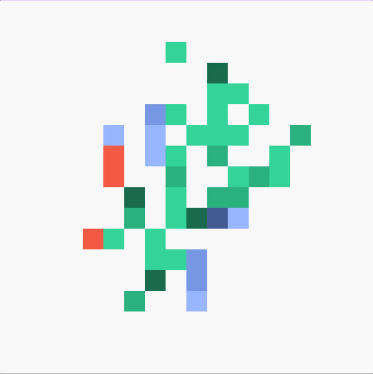
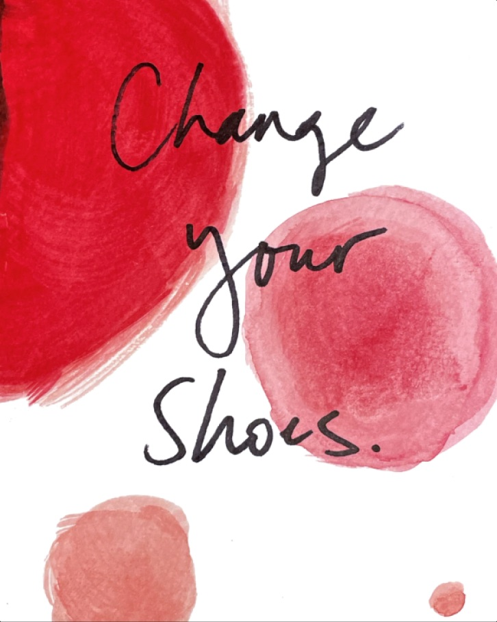
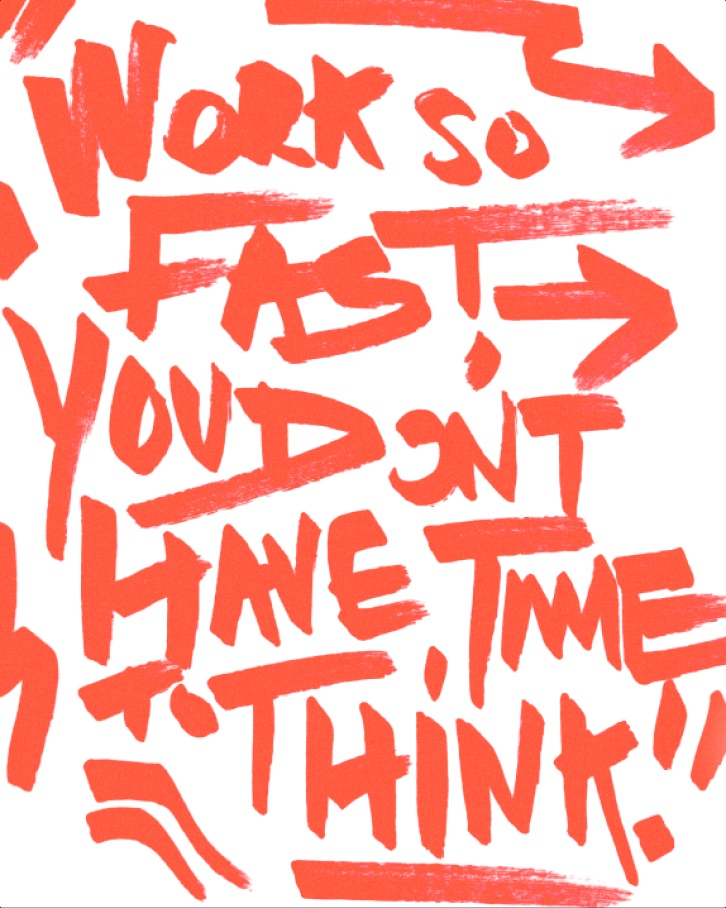
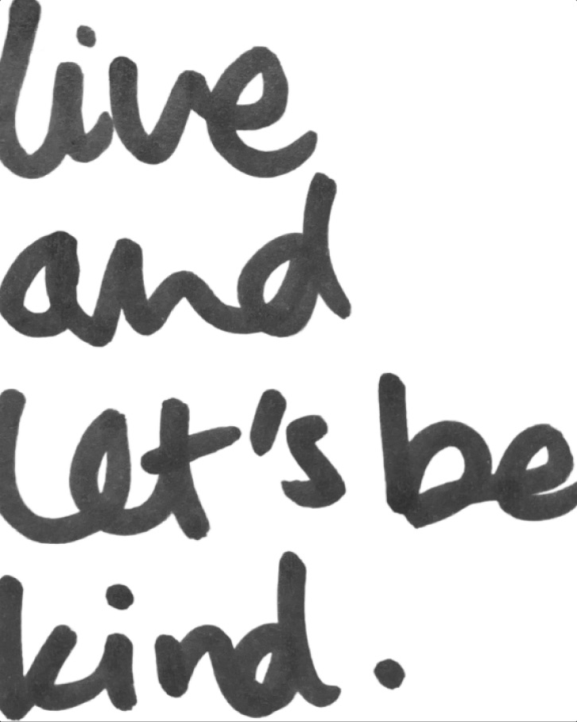
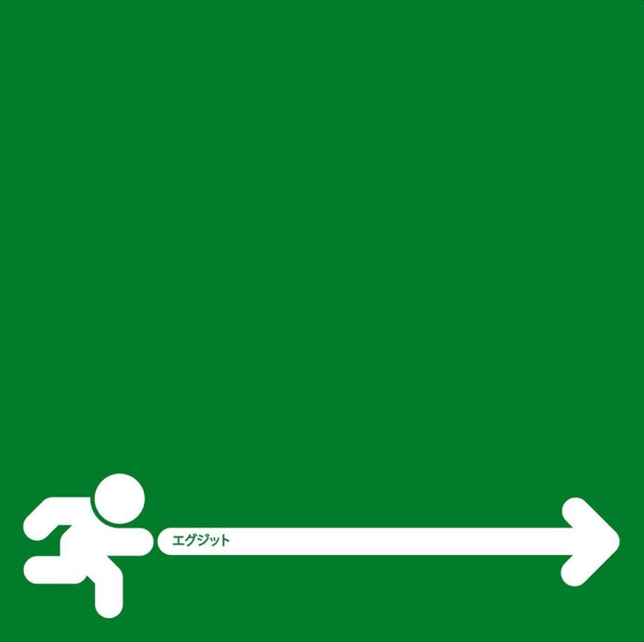
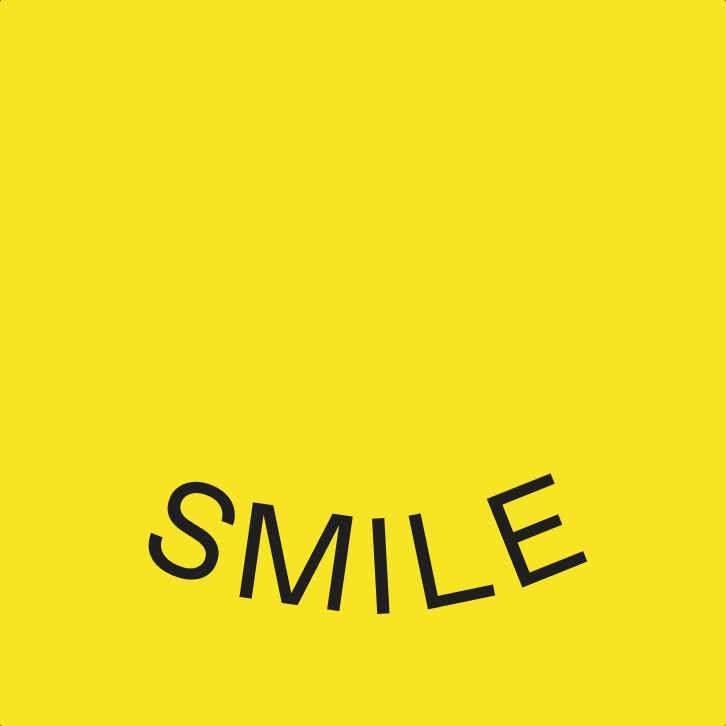
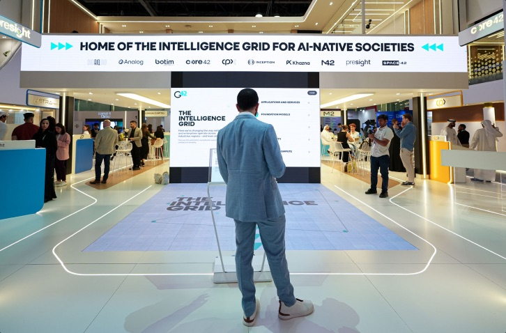
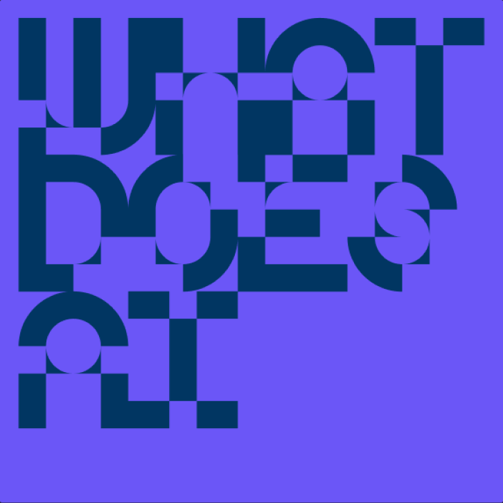
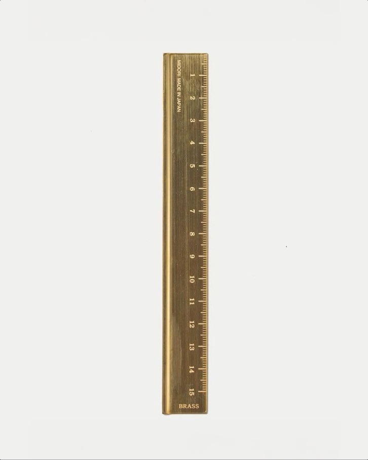
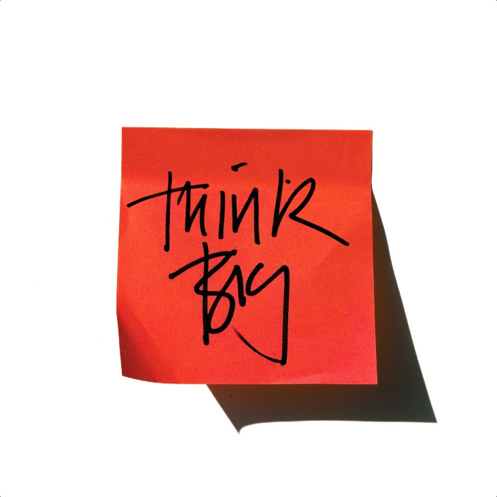

Frame of Mind
The latest thinking from our insatiably curious Frameworkers.

Your brand has answers: AI just can’t find them
You don’t need to create a second universe of AI content. You just need to make the gold you already have accessible to AI.

I am challenging: Janelle
Meet the challenging people who own The Frameworks. Janelle, our Senior Writer and Editor, encourages fellow Frameworkers to shake things up with their footwear and B2B brands to get in touch with their musical side.

Storytelling and imagination in the age of AI
Once upon a time there was a creative strategist...

I am challenging: Ross
Meet the challenging people who own The Frameworks. Ross, our Design Director, challenges himself to slow down his creative process and the industry to give the next generation a chance.
Your audience isn’t a persona it’s a moving target
The supply of brand knowledge is changing – but so is the demand. Brands must understand the evolving questions, needs and cares of the people they want to get close to.

I am challenging: Rose
Meet the challenging people who own The Frameworks. Rose, our Design Director, challenges herself to get back into drawing and for everyone to find joy in the small things.

A gameplan for success
It’s been an incredible summer of sport, from the Euros to the Olympics. For B2B brands, this offers a unique opportunity to explore human stories – and capture hearts and minds.
Being known is no longer enough in an AI world
In the early days of the internet, the idea that anyone would buy something virtually felt inconceivable. To part with your hard-earned cash, you needed to see and feel a product for yourself, or build a personal relationship with a salesperson.

Different ways to find moments of calm
From a short walk outside to a couple of minutes spent learning something new, these are some of the little things we do each day.

Putting AI first: how the UAE is transforming conversations, brands and societies
Ben Bush reflects on an inspiring week at GITEX GLOBAL, where 200,000 people descended on Dubai from more than 180 countries. And all of them wanted to talk about AI.
Cracking the code
When you’re faced with a jaw-dropping deadline for a show-stopping digital project, the heat is on.

The Prompt: What does AI think of your brand? And why does it matter?
The way people discover and experience brands is changing. Unlike traditional search where a range of responses appear, AI platforms give clear, authoritative answers.
Imaginative businesses come out on top. Are you one of them?
At The Frameworks, we know first-hand how valuable imagination is. In today’s climate of rapid transformation and AI, imaginative businesses come out on top.

How to avoid perfectionism paralysis
Can our work ever really be “perfect” – and does it matter? Sophie navigates the doubts, debates, tricks and triumphs that make up a standard day in the life of a creative strategist.

A new chapter and the new frameworker
The region had been on our radar as a hotbed of tech innovation for some time.

Imagination: the missing metric in business strategy
Imagine an alternative world where humans were incapable of conceptual thought.
Fancy a challenge?
Let’s talk